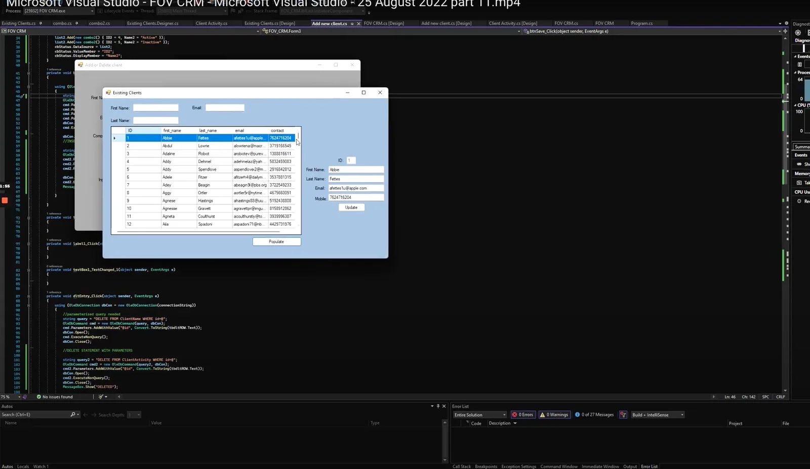
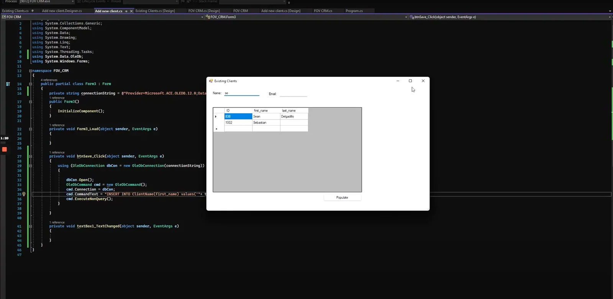

- Language C#
- Type Windows Forms desktop app
- Built during IT apprenticeship



C# coding project
During my apprenticeship I built a C# application from a brief. I had to propose a solution, construct it and then test it.
View the project files
